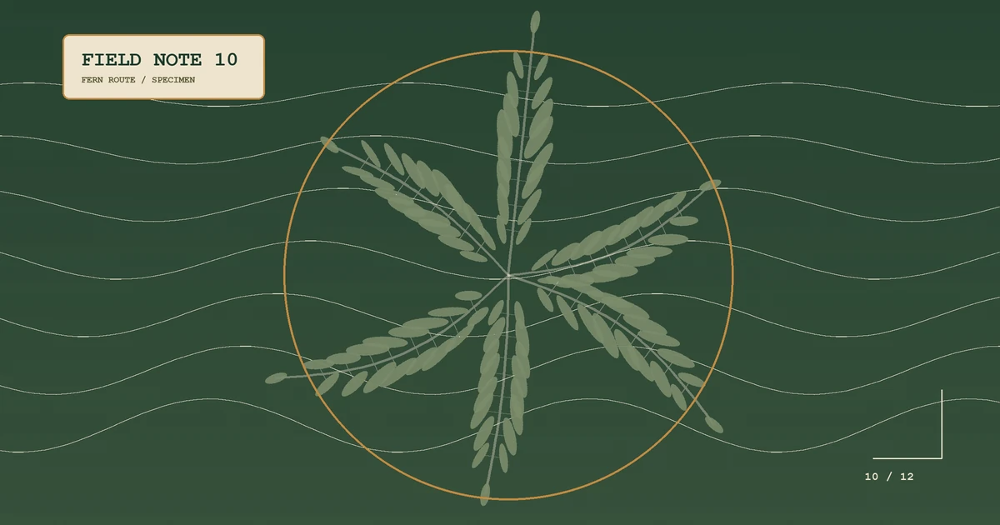

NOTE 10 / REVIEW
{{ARTICLE_10_TITLE}}
{{ARTICLE_10_LEAD}}
- FIELD MARK
- {{ARTICLE_10_METRIC_1}}
- CHECKPOINT
- {{ARTICLE_10_METRIC_2}}
- REVISION
- {{ARTICLE_10_METRIC_3}}

WAYPOINT / 01
{{ARTICLE_10_H2_1}}
{{ARTICLE_10_BODY_1}}
WAYPOINT / 02
{{ARTICLE_10_H2_2}}
{{ARTICLE_10_BODY_2}}
WAYPOINT / 03
{{ARTICLE_10_H2_3}}
{{ARTICLE_10_BODY_3}}
{{ARTICLE_10_FAQ_Q}}
{{ARTICLE_10_FAQ_A}}